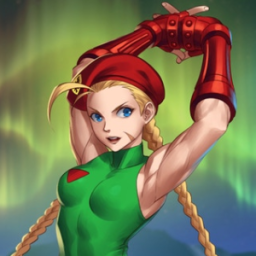

 Super Street Fighter II Turbo
Details
 |
|
| Playtime | Not Played |
| Last Activity | Never |
| Added | 4/29/2025 6:52:10 |
| Modified | 5/1/2025 2:26:58 |
| Completion Status | Not Played |
| Library | Playnite |
| Source | |
| Platform | Nintendo SNES |
| Release Date | 2/23/1994 |
| Community Score | |
| Critic Score | 84 |
| User Score | |
| Genre | Arcade Fighting |
| Developer | Capcom Eurocom |
| Publisher | GameTek |
| Feature | Controller Support Multiplayer Single Player |
| Links | PCGamingWiki HowLongToBeat IGDB StrategyWiki MobyGames Wikipedia |
| Tag | Direct control Pixel art Real-Time Side view |
Description
Super Street Fighter II Turbo, released in Japan as Super Street Fighter II X: Grand Master Challenge is a 1994 fighting game developed and published by Capcom for arcades. It is the fifth installment in the Street Fighter II sub-series of Street Fighter games, following Super Street Fighter II (1993). Like its predecessor, it ran on the CP System II hardware.
Super Turbo introduced several new gameplay mechanics not present in previous versions of Street Fighter II, including the addition of combination moves called super combos and air combos. It also introduced the secret character Akuma, who would go on to become a recurring character in later Street Fighter installments and other Capcom fighting games. While not as commercially successful as previous iterations of Street Fighter II, Super Turbo was well-received by critics and had a major impact on the competitive fighting game community. Super Street Fighter II Turbo is still played competitively, and is the oldest fighting game with an active international tournament scene.
The game was ported to 3DO that same year followed by home computer ports for DOS and the Amiga. In 1997 it was ported to the PlayStation and Sega Saturn as part of the Street Fighter Collection, and in 2000 to the Dreamcast in Japan under the title of Super Street Fighter II X for Matching Service. A Game Boy Advance version was also made. A remake of Super Street Fighter II Turbo was released in 2008 for the PlayStation 3 and Xbox 360 titled Super Street Fighter II Turbo HD Remix.
Characters
Super Street Fighter II Turbo allows players to play as versions of characters from the original Super Street Fighter II in addition to their regular counterparts in the game by inputting a code for each character. The character would play as they would in Super Street Fighter II, with subtle differences. For example, the alternate version of Sagat in Super Turbo can now cancel his light kick into any special move, whereas in Super Street Fighter II he couldn't.[citation needed]
Super Street Fighter II Turbo also saw the introduction of the series' first secret character, Akuma (Gouki in Japan). Akuma is playable only as a secret character. He can be used by inputting a code at the player select screen. Even in this weakened form, he is the most powerful character in the game, and has historically been banned in all competitive tournaments of the game, including updated versions of Super Turbo.
Gameplay
Super Street Fighter II Turbo featured several changes and additions to the play mechanics inherited from Super Street Fighter II. The HUD featured new graphics. Super Street Fighter II's opening sequence and unused sequence featuring lead character Ryu launching a Hadouken projectile towards the screen (which had replaced two generic characters fighting in front of a crowd) was intercut with images of Chun-Li and Cammy, as well as flashes of the new hidden character Akuma. New animation frames were drawn for all the victory poses and the basic and special moves of the characters. For example, Chun-Li received a new animation for her Kikōken (fireball) projectile. A large criticism of Super Street Fighter II was the slower game speed in comparison to the previous release, Street Fighter II: Hyper Fighting. Super Turbo was the first Street Fighter game released in arcades to feature an adjustable speed setting. The game speed can be adjusted through the system configuration by the game's operator or (if the speed setting is set to "Free Select") can be chosen by the player at the start of the game. The player has a choice between four speed settings.[citation needed]
Super Street Fighter II Turbo introduced "Super Combos". After building up the "Super" meter, players can execute a multi-hit automatic combo which deals a large amount of damage.
Home versions
Direct ports
3DO Interactive Multiplayer
The 3DO port was released on November 13, 1994 in Japan, with subsequent releases in North America and Europe during the same year. While the graphics are more accurately reproduced compared to the previous console ports for 16-bit platforms, the game doesn't support parallax scrolling and is missing animations on characters. Also, the Super versions of characters are not present.
While often claimed to suffer from poor, stuttery performance, due to CDs of the time often having such issues, modern testing disputes these claims, and verifiable reports from the time are rare, if any exist at all.
The soundtrack features the same remixed music from the FM Towns version of Super Street Fighter II (with a few additional remixes specific to Super Turbo). This port also features "CPS1 Chains", a feature that only existed in the arcade versions up until Hyper Fighting.
MS-DOS and Amiga
The MS-DOS version, developed by Eurocom and published by GameTek, was released in May 1995 in North America and Europe. There are secret commands to use each character's original color scheme or attacks that were removed from the 3DO version due to memory constraints. The option menus have custom settings (such as enabling and disabling parallax scrolling) that allows the game to be played with low hardware specifications. The biggest change is the game's resolution; the game is played with a resolution of 320×200 on AT/PC-compatible machines and, since the graphic data is ported straight from the arcade version, all of the characters appear large due to the narrow screen size. Because of this, the distance between both fighters at the beginning of a match is slightly narrower than in the arcade version. There were many glitches in the initial shipments of the DOS port, such as characters landing and recovering normally after being knocked out with a basic attack in mid-air. A patch file was distributed that corrected these glitches, which were later fixed in version 1.5 of the retail release. A patch file for version 1.6 was released as well. The music was remixed, although the arrangements are different from the ones used in the 3DO soundtrack.
The Amiga port was also released by Gametek (and ported by Human Soft) in 1996, which is graphically very close to the original arcade version and features a remixed soundtrack, but suffers from jerky animation and other shortcomings when played on an unexpanded machine.
PlayStation and Sega Saturn
Super Turbo is included in the Street Fighter Collection compilation for the PlayStation and Sega Saturn, which also includes Super Street Fighter II on the same disc, as well as Street Fighter Alpha 2 Gold on a second disc. There is a small delay at the beginning of every match, and there are numerous small differences from the arcade version.
Dreamcast
Capcom released Super Street Fighter II X for Matching Service for the Dreamcast in Japan exclusively as a mail-order release via the online Dreamcast Direct store (later known as Sega Direct) on December 22, 2000. The Dreamcast version features an online versus mode on Sega's "Matching Service" compatible only on analog modems. (The Matching Service closed on September 1, 2003.) The bonus mini-games from previous versions of Street Fighter II, which had been cut from the arcade, were restored in this version and can be enabled via a special options menu making it more arcade-accurate. Other secret options are available as well. The Dreamcast version is considerably more accurate than the PlayStation and Sega Saturn versions, as almost nothing was changed aside from the score display. It features additional speed settings including faster speeds (speeds 4–6) and a very slow speed (speed 0) that doesn't remove any frames.
Capcom Classics Collection
Super Turbo is included in Capcom Classics Collection Vol. 2 for the PlayStation 2 and Xbox. Although the first compilation included the first three Street Fighter II games, the second volume skipped the original Super Street Fighter II and only included Super Turbo. This version has many glitches.
30th Anniversary Collection
Super Street Fighter II Turbo is included in Street Fighter 30th Anniversary Collection. The existing updates of this title are not included in the collection as Hyper Street Fighter II is exclusive to arcade, PlayStation 2 and Xbox, while Ultra Street Fighter II is exclusive to Switch. In this release, save states are featured in the source code, while other features can be toggled on and off. Regarding online functionality, this title (along with Street Fighter II: Hyper Fighting, Street Fighter Alpha 3 and Street Fighter III: 3rd Strike) has availability for multiplayer matches.
The arcade version was also ported in the compilation Capcom Arcade Stadium as an individual purchase option in the software. This edition allows for selection of either US and Japan editions of the game.
Reception
In Japan, Game Machine listed Super Street Fighter II Turbo on their April 15, 1994 issue as being the second most-successful table arcade unit of the month, just below Virtua Fighter while outperforming titles like Art of Fighting 2 and Karnov's Revenge. It went on to become Japan's highest-grossing arcade game of 1994, and sixth highest of 1995. In the United States, Super Street Fighter II Turbo was the top-earning arcade printed circuit board (PCB) in May 1994. It was one of America's top twelve best-selling arcade video games of 1994.
In the January 30, 1995 issue of Japanese magazine Gamest, Super Street Fighter II X (known as Super Turbo internationally) placed fourth place in the award for Best Game of 1994 and Best Fighting Game. Upon release on home consoles, Famicom Tsūshin scored the 3DO version of the game a 29 out of 40.
The four reviewers of Electronic Gaming Monthly gave the 3DO version a unanimous score of 8/10, commenting that the graphics and content accurately recreate the arcade version, and that the control is "near perfect" even when using the standard 3DO pad. In contrast, GamePro stated that the control is imperfect even with Panasonic's six-button controller, and is terrible with the standard pad due to the "mushy" D-pad. They also criticized the absence of the older versions of the fighters and concluded that the port, though "a reasonably close translation of the coin-op", falls second to the SNES version of Street Fighter II: Hyper Fighting among Street Fighter II conversions. A reviewer for Next Generation concurred with GamePro that the 3DO controllers are not optimal for the game, but still held it to be "without a doubt, the best version [of Street Fighter II] to hit home systems." He described the conversion as "colorful, fast, and so impressive you hardly notice the disk access time between rounds." Arcade Sushi ranked Super Street Fighter II Turbo as the "best fighting game", adding that it "is easily the most loved, and the most played game in the franchise. If you haven't played this fighter, then you haven't played fighting games at all." Future Publishing's Ultimate Future Games gave the 3DO version a 95% score, hailing it as the "game that'll save the 3DO". They praised it as the "ultimate beat 'em up" while their only criticism was the "Slow CD access" times. In 2019, Game Informer ranked it as the 3rd best fighting game of all time.
Competitive play
Super Street Fighter II Turbo has been a staple in the competitive fighting game scene for its entire existence in one form or another. It was a featured game at the Evolution Championship Series (EVO) from 2002 to 2008. Its remixed version, Super Street Fighter II Turbo: HD Remix, was played in 2009 and 2010. It has returned to EVO as a featured side event as the invite/qualifier limited "Tournament of Legends" in 2012 and 2014 and the "ST Games" in 2013. The game is also a staple at the Japanese X-MANIA series of tournaments and has featured in the Tougeki Super Battle Opera series of tournaments multiple times. [citation needed]